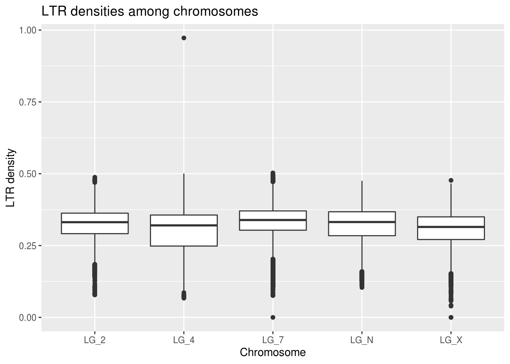

Exploratory Data Analysis
Zoe Humphries
Lesson preamble:
Lesson objectives:
- Implications of (not) understanding your data
- How did you collect your data?
- What are the properties of your data?
- Exploring and asking questions about your data with graphing/visualization
- Using insights from exploratory analysis to clean up data:
- Dealing with unusual values/outliers
- Dealing with missing values (NAs)
Lesson outline:
Total lesson time: 2 hours
- Data properties, initial predictions (15 min)
- Plotting and exploring data (45 min)
- Dealing with unusual values (15 min)
- Re-connecting with our predictions (30 min)
- Dealing with missing values (15 min)
Introduction
Exploratory data analysis is your exciting first look at your data! This is usually a somewhat disheartening experience: you slowly realize yet again that nothing is ever perfect, so you’ll be spending the next several days massaging your data into a format that you can actually use to answer your questions. But THEN you’ll get to answer your questions! Yay!!
You need to understand your data you before you analyze it.
What kind of data is it?
What variation is present in my data?
Are there any data points with values beyond the limits I anticipated?
Do you notice any patterns?
The patterns you see can lead you to exciting new questions you may not have anticipated!
Setup
We’ll use what you’ve learned about summarizing and visualizing data with dplyr and ggplot to get to know some data!
Hopefully you’ve already downloaded the data sets we provided.
download.file("https://uoftcoders.github.io/rcourse/data/pseudo.ara.busco",
"pseudo.ara.busco")
download.file("https://uoftcoders.github.io/rcourse/data/pseudo.LTRs",
"pseudo.LTRs")
download.file("https://uoftcoders.github.io/rcourse/data/pseudoMol_Kdist.txt",
"pseudoMol_Kdist.txt")We’re going to load the genomic data we have on the density of genes, the density of a type of repetitive element (LTRs stands for Long Terminal Repeat - there’s some more info on them coming up in the ‘predcitions’ section), and the approximate evolutionary age of those repetitive elements.
geneDensity <- read_tsv("data/pseudo.ara.busco",
col_names=c("chromosome", "start", "end", "winNum",
"numElements", "numBases", "winSize",
"density"))## Parsed with column specification:
## cols(
## chromosome = col_character(),
## start = col_double(),
## end = col_double(),
## winNum = col_double(),
## numElements = col_double(),
## numBases = col_double(),
## winSize = col_double(),
## density = col_double()
## )ltrDensity <- read_tsv("data/pseudo.LTRs",
col_names=c("chromosome", "start", "end", "winNum",
"numElements", "numBases", "winSize",
"density"))## Parsed with column specification:
## cols(
## chromosome = col_character(),
## start = col_double(),
## end = col_double(),
## winNum = col_double(),
## numElements = col_double(),
## numBases = col_double(),
## winSize = col_double(),
## density = col_double()
## )## Parsed with column specification:
## cols(
## chrom = col_character(),
## start = col_double(),
## end = col_double(),
## K2P = col_double()
## )We’re using “read_tsv” instead of “read_csv” because the columns in this file are separated by tabs instead of commas. The LTR age data (pseudoMol_Kdist.txt) already has column names, but the other two data sets need some more information
What is my data, actually?
Before we do anything else, we have to think about where this came from & the kinds of questions “we” had in mind when “we” collected it.
This data describes a few of the genetic “bits” (we generally call them “elements”) live in one plant genome. The chromosomes have been broken down into 1Mb pieces (“windows”) that overlap each other and the contents of each window have been averaged. We’ve got information on the density of conserved genes and one type of transposon for each window. Additionally, we have the evolutionary age for those transposons.
Predictions
It’s always good to lay out your hypotheses first. It can help you figure out how you need to assemble your data in order to test those predictions effectively.
- In areas where gene density is high, LTR density is low
- LTRs are a type of transposable element, aka “genomic parasite”
- They make copies of themselves at the expense of their host genome
- They make up a large portion of plant genomes (can be >40%!)
- The host genome wants to prevent them from replicating
- Certain regions of a chromosome are more tightly wound up with histones
- This makes them less accessible to molecular machinery
- If polymerases aren’t likely to access a region, the region can’t be expressed
- If a region is unexpressed, you don’t want genes there!!
- LTRs tend to accumulate in these regions
- More accessible, active regions of a chromosome have higher gene content
- These regions can be expressed effectively!
- LTRs that insert into these regions have a worse impact on the host
- Other factors like recombination rate and methylation also support this pattern
- LTRs are a type of transposable element, aka “genomic parasite”
- In areas where gene density is high, LTR age will be high (old, not transposing anymore)
- There won’t be many new deleterious LTR insertions
- Few young LTRs
- The LTRs that are present in those regions can’t have lethal effects
- If they’re there, their effects are unlikely to have terrible effects on fitness
- Some transposable elements have been “domesticated” by their hosts
- This all contributes to the likelihood that LTRs present can/have persisted
- LTRs present are more likley to be older
- There won’t be many new deleterious LTR insertions
- The sex chromosome (LG_X) will have higher LTR density
- Larger proportions of sex chromosomes are less accessible
- Sex chromosomes experience lower rates of recombination
- Also correlated with higher transposon density and lower gene density
- These trends are more true for non-recombining Y chromosomes than X chromosomes
- Recombination can occur between the two X chromosomes in females
First Peek
First, let’s just take a quick look at the gene density data set and ask ourselves what we’re dealing with. On a very basic level, what kind of variables do we have?
## # A tibble: 48,952 x 8
## chromosome start end winNum numElements numBases winSize density
## <chr> <dbl> <dbl> <dbl> <dbl> <dbl> <dbl> <dbl>
## 1 LG_N 0 1000000 1 1 2499 1000000 0.00250
## 2 LG_N 20000 1020000 2 1 2499 1000000 0.00250
## 3 LG_N 40000 1040000 3 2 10158 1000000 0.0102
## 4 LG_N 60000 1060000 4 2 11583 1000000 0.0116
## 5 LG_N 80000 1080000 5 2 11583 1000000 0.0116
## 6 LG_N 100000 1100000 6 2 11583 1000000 0.0116
## 7 LG_N 120000 1120000 7 2 11583 1000000 0.0116
## 8 LG_N 140000 1140000 8 2 11583 1000000 0.0116
## 9 LG_N 160000 1160000 9 2 11583 1000000 0.0116
## 10 LG_N 180000 1180000 10 2 11583 1000000 0.0116
## # … with 48,942 more rowsWhat are your first impressions of the data?
Which variables will be relevant for testing our predictions?
Basic Variable Categories
Common variable types:
- Independent vs dependent
- Continuous vs discrete
- Qualitative: categorical/nominal, ranked/ordinal, dichotomous
- Quantitative: interval, ratio
This matters because the type of data tells us the appropriate way to visualize it:
- Qualitative data: pie charts or bar charts
- Quantitative data: histograms, box plots
Visualizing Your Data
Describing patterns
For a given variable, you’re generally looking at the range of values and where the majority of the data lies. This gives you an idea of the distribution of your data. As you’re aware, many statistical tests make assumptions about the distribution of your input data - it’s very important to make note of the shapely properties of your data.
- Average (mean, median, mode)
- Range (max, min)
- Skewness: how symmetrical is your data around the average?
- Classic bell curve has a skew of zero
- If your data isn’t symmetrical, that can give you important info!
- Skewed distributions aren’t likely to be normally distributed
- Kurtosis: how sharp is your central peak?
- If your distribution is basically flat, its kurtosis is negative
- If your distribution has a huge spike, its kurtosis will be positive
Histograms
Extremely #classic (is it still cool to use hastags??)
Qualitative Data
Histograms are great for qualitative data because they visualize the number of times a given value appears in your data.
Quantitative Data
Histograms can also provide a glimpse into continuous data, providing that you tell ggplot how to group your data into discrete bins. Here, we can look at our data’s values for gene density. This density is a measurement of the number of base pairs in a 1Mb window that are part of a gene divided by the total number of base pairs in the window (1 000 000).
ggplot(geneDensity, aes(density)) +
geom_histogram(binwidth=0.01) +
labs(title="Distribution of gene density values",
x="Gene density", y="Count (bin size = 0.01)") # Adding labels helps!What do you notice about this distribution?
Why do you think it looks this way?
When you’re subsetting continuous data into discrete bin widths, it’s important to try out different values because different bin sizes can give different impressions of your data’s distribution.
ggplot(geneDensity, aes(density)) +
geom_histogram(binwidth=0.001) + # Teeny tiny bins
labs(title="Distribution of gene density values",
x="Gene density", y="Count (bin size = 0.001)")ggplot(geneDensity, aes(density)) +
geom_histogram(binwidth=0.1) + # Huge bins! (for this data)
labs(title="Distribution of gene density values",
x="Gene density", y="Count (bin size = 0.1)")It’s also interesting to see whether your data’s distribution is different for any of the categories you’re looking at. Is there greater variation in height among women vs humans as a whole?
Histogram of subset
Let’s see whether the gene density on one of the chromosomes (how about LG_2) fits the general pattern.
Based on our initial hypotheses, would you predict that it would?
It is important to consider how your hypotheses may affect the way you filter your data, so be mindful about tweaking parameters (like bin width) to fit the output you expect!
LG2genes <- filter(geneDensity, chromosome == "LG_2")
ggplot(LG2genes, aes(density)) +
geom_histogram(binwidth=0.01) +
labs(title="Distribution of gene density values on LG_2",
x="Gene density", y="Count")The range for the x axis is much smaller! The maximum gene density here is much smaller than the highest value in the full genome data set.
Why might this be?
One of the aspects of your data that you can’t visualize well with a histogram is whether there are any values that exceed the limits you expected for your data.
Scatterplots & Box plots
More info! Less bias!
With quantitative data, we can get more information by looking at scatterplots and box plots. Not only are they immune to bin size bias, they can help us find outliers and let us make initial visual comparisons of averages across categories.
Visualize raw data as a scatterplot
We know that “chromosome” is a categorical, independent variable appropriate for our X axis and that “density” is a continuous, dependent variable that will be appropriate for the Y.
ggplot(geneDensity, aes(x=chromosome, y=density)) +
geom_point() +
labs(title="Comparison of gene density across chromosomes",
x="Chromosome", y="Gene density")Already, we can see that there different maximum gene density values on each chromosome. Because the points are likely overlapping it’s hard to evaluate what the average or skewness might be for any of the categories.
Boxplots for better comparisons
Because boxplots display the median and quartile limits, it’s much easier to evaluate the properties of the distribution.
ggplot(geneDensity, aes(x=chromosome, y=density)) +
geom_boxplot() +
labs(title="Comparison of gene density across chromosomes",
x="Chromosome", y="Gene density")There’s definitely a value that jumps out immediately. It’s stretching the scale of the Y axis so that it’s hard to effectively compare the medians of each of the chromosomes.
Axis scaling
Before we officially decide what to do with this outlier, we’ll set it aside for now (re-scaling our Y axis) to look at our typical values.
ggplot(geneDensity, aes(x=chromosome, y=density)) +
geom_boxplot() +
ylim(0,0.125) +
labs(title="Comparison of gene density across chromosomes",
x="Chromosome", y="Gene density")## Warning: Removed 1 rows containing non-finite values (stat_boxplot).Look at that handy warning! It lets us know that one value was thrown out: “removed 1 rows”. This view helps us to get a better general understanding of how this categorical “chromosome” value might relate to gene density. However! It’s important not to throw out data unless you have good reason to believe it doesn’t belong in the data set.
Bonus note: you can use the coord_cartesian function instead of ylim and it only rescales, without removing any values. It won’t warn you if any of your data points are beyond the limits of the axes, though.
Separate by category
Definitely more interesting to compare across the categories built into our data (here, chromosomes) to see how the gene density looks in each one separately. We can see whether the global pattern is present in each category. But how can we get all that info in one graph??
First step is to ask ourselves what we currently have in our data. If our category for comparison is chromosome, what independent variables are shared among them that could facilitate comparison of the dependent gene density variable?
## # A tibble: 48,952 x 8
## chromosome start end winNum numElements numBases winSize density
## <chr> <dbl> <dbl> <dbl> <dbl> <dbl> <dbl> <dbl>
## 1 LG_N 0 1000000 1 1 2499 1000000 0.00250
## 2 LG_N 20000 1020000 2 1 2499 1000000 0.00250
## 3 LG_N 40000 1040000 3 2 10158 1000000 0.0102
## 4 LG_N 60000 1060000 4 2 11583 1000000 0.0116
## 5 LG_N 80000 1080000 5 2 11583 1000000 0.0116
## 6 LG_N 100000 1100000 6 2 11583 1000000 0.0116
## 7 LG_N 120000 1120000 7 2 11583 1000000 0.0116
## 8 LG_N 140000 1140000 8 2 11583 1000000 0.0116
## 9 LG_N 160000 1160000 9 2 11583 1000000 0.0116
## 10 LG_N 180000 1180000 10 2 11583 1000000 0.0116
## # … with 48,942 more rowsStart, end, and winNum would all be reasonable proxies for chromosomal position, but start will be the most true-to-reality choice.
ggplot(LG2genes, aes(x=start, y=density)) +
geom_point() +
labs(title="Comparison of gene density along LG_2",
x="Chromosomal position (bp)", y="Gene density")This gives us an overview of how many of the conserved genes are found in which region of this LG_2 chromosome.
To be able to compare all the chromosomes at the same time, we can split our graph into “facets” so there’s one per chromosome. There’s a handy-dandy ggplot feature for that!
ggplot(geneDensity, aes(x=start, y=density)) +
geom_point() +
labs(title="Comparison of gene density across chromosomes",
x="Chromosomal position (bp)", y="Gene density") +
facet_wrap( vars(chromosome) )Because not all of the chromosomes are the same length, the data appears more squished in some of the panels. We can adjust that by telling facet wrap to scale the X axis per-panel instead of globally.
If we want to be able to visually compare the densities across chromosomes, we should not allow the Y axis to scale freely. We can, however, set a limit for the Y axis values, as we’ve done before.
ggplot(geneDensity, aes(x=start, y=density)) +
geom_point() +
coord_cartesian( ylim=c(0,0.13) ) +
labs(title="Comparison of gene density across chromosomes",
x="Chromosomal position (bp)", y="Gene density") +
facet_wrap( vars(chromosome), scales="free_x" )Cool, eh?? The chromosomes have very different patterns! The range and distribution of values differs considerably!
What are some reasons for gene density to change along a chromosome? * Centromeres are mostly made up of repeats - very low gene content + Centromeres can be in the middle or near one end of a chromosome + Where do you think the centromeres are in these chromosomes? * Certain regions of a chromosome are more tightly wound up with histones + Makes them less accessible to molecular machinery + If polymerases don’t reach a region, that region can’t be expressed + If a region is unexpressed, you don’t want genes there! + Centromeres are generally one of these ‘inactive’ regions * More accessible, active regions of a chromosome have higher gene content + These regions are generally along chromosome arms
Boxplot augmentations
There are a few additional things we can do that might make boxplots even more informative for our data.
- Violin plots - boxplots but with curves instead of boxes
- Adding a scatterplot in front of the boxplot
- Adding “jitter” to scatterplots so the points are offset
- Alternatively, you can make the points more transparent
- You can also add a line that follows the trend of the data
ggplot(LG2genes, aes(x=winNum, y=density)) +
geom_violin() +
geom_point(alpha=0.1) + # alpha changes the transparency
labs(title="Comparison of gene density along LG_2",
x="Chromosomal position", y="Gene density")A violin plot doesn’t seem appropriate for this data, but making the points more transparent gives us a better idea of what density values are most common. You can see this at the bottom of the graph, where the points don’t look transparent at all - so many points!!
Now it’s time to start thinking about what to do with rebellious outliers!
Outliers
But why are you like this?
There could be many reasons why your data has values that exceed the limits you expected it would have. It basically comes down to error, whether in your data or in the expectation you had for its limits. Consider error carefully.
- Incorrect prediction of what the limits should be
- Maybe your study system has different qualities than literature spp.
- Systematic error is predictable and affects a measurement’s accuracy
- Incorrectly calibrated lab equipment (pH meter, thermometer, etc.)
- Genomics - your gene annotation can be biased by repetitive elements
- Can be very difficult to compensate for this kind of error
- Random error affects measurement precision (think significant figures)
- Writing down measurements incorrectly in your notes
- A lab scale can only weigh samples to a given decimal point
- Simple human fallibility when it comes to assessing measurements
- Take multiple measurements and average the results to compensate
- Common sources
- This (exploratory data analysis) is a great time to look for issues!
- Error in previous analysis steps (code that produced LTR age estimates)
- Erroneous assumptions about your sample sites or methods
- Don’t just throw out a point because you can ascribe it to error
IMPORTANT NOTE: if you do end up removing any data, you MUST disclose the removal and your justification for the removal. Your reasons could be great, but you need to make sure your audience has access to those reasons.
This consideration of weird values brings up an interesting point: you’re doing these checks because your values are different than what you expected. It’s important to think about analytical ‘controls’ to look for potential errors even when your data looks the way you expect it to! Steps towards this can be as simple as sharing your code publicly.
Let’s take a look!
We had that weird really high gene density value on the LG_X chromosome. Let’s look at what’s happening there.
## # A tibble: 1 x 8
## chromosome start end winNum numElements numBases winSize density
## <chr> <dbl> <dbl> <dbl> <dbl> <dbl> <dbl> <dbl>
## 1 LG_X 134160000 134165151 6709 1 2655 5151 0.515What do the other variables tell us about this data point?
This data point has a really high winNum, so it’s likely located near the end of the chromosome. But importantly, our windows are supposed to be 1Mb in size (1 000 000 value in the winSize column). The winSize value for this outlier is tiny in comparison!!
Wholesome thoughts about your data
That last look showed us that it’s definitely very important to consider our data as a whole: to think not only about the variables relevant to our hypotheses, but the way in which it was collected (how that was reflected in the other properties of the data).
So. Let’s try to understand more about the interaction between gene density and window size in the rest of our data. Visualization time!
ggplot(geneDensity, aes(x=start,y=winSize, colour=chromosome)) +
geom_point() +
labs(title="Window sizes along the chromosome",
x="Chromosomal position (bp)", y="Window size (bp)")It looks like all of the chromosomes get this trail-off in window size near their ends.
Let’s look at only the window sizes less than what we expect (1 000 000) and make sure that the pattern really is the same among the chromosomes.
Why do we want to do this?
smallWindows <- filter(geneDensity, winSize < 1000000)
ggplot(smallWindows, aes(x=chromosome, y=winSize, colour=chromosome)) +
geom_violin() +
geom_point(position="jitter") +
labs(title="Comparing small windows among chromosomes",
x="Chromosome", y="Window Size")ggplot(smallWindows, aes(x=chromosome, y=density, colour=chromosome)) +
geom_violin() +
geom_point(position="jitter") +
labs(title="Comparing small windows among chromosomes",
x="Chromosome", y="Window Size")It looks like the pattern is approximately equal across all chromosomes.
What does that mean for us? How should we handle these values?
BONUS: Compare density with and without outliers
How does this winSize variable impact gene density? What do we predict based on what we know thus far?
It’s much esier to compare when everything is in the same plot. This will be somewhat tricky with the data the way it is. We will need to label each density as either belonging in a “small window” or a “normal window”. We can create a new “winCategory” variable using mutate() and assign the value of “small” to windows with winSize less than 1Mb and “normal” to all the other windows (which we expect will have a value of 1Mb).
geneDensity2 <- geneDensity %>%
mutate( winCategory = case_when(winSize<1000000 ~ "small",
TRUE ~ "normal") ) %>%
group_by(winCategory, chromosome)
summarise(geneDensity2,
mean=mean(density), median=median(density), n=n(),
max=max(density), sd=sd(density))## # A tibble: 10 x 7
## # Groups: winCategory [2]
## winCategory chromosome mean median n max sd
## <chr> <chr> <dbl> <dbl> <int> <dbl> <dbl>
## 1 normal LG_2 0.0104 0.00481 11184 0.119 0.0168
## 2 normal LG_4 0.0123 0.00730 6470 0.0900 0.0146
## 3 normal LG_7 0.00909 0.00284 15888 0.123 0.0151
## 4 normal LG_N 0.0111 0.00464 8501 0.0690 0.0143
## 5 normal LG_X 0.0119 0.00449 6659 0.0960 0.0175
## 6 small LG_2 0.0443 0.0472 50 0.0964 0.0299
## 7 small LG_4 0 0 50 0 0
## 8 small LG_7 0.0443 0.0370 50 0.122 0.0233
## 9 small LG_N 0 0 50 0 0
## 10 small LG_X 0.0358 0.0226 50 0.515 0.0705What can we take away from this table?
The n values are considerably larger for the normal-sized windows group. LG_4 and LG_N had 0 gene density in their small windows but have some of the highest median gene densities in the normal-sized windows.
The standard deviation of the small windows is much higher. Is that what we would expect for that data category?
Perhaps most importantly for our purposes, the mean and median are quite different. These smaller windows have considerably different values.
What does this look like in an actual plot? This is going to take a bit of black magic in the form of two separate calls to geom_boxplot(). The first will use all the windows (setting it to colour values by ‘all’) and the second will actually create (and colour) different box plots based on their winCategory value.
ggplot(geneDensity2, aes(x=chromosome, y=density, colour=winCategory)) +
geom_boxplot( aes(x=chromosome, y=density, colour="all") ) +
geom_boxplot() +
coord_cartesian(ylim=c(0,0.125)) +
labs(title="Visualizing gene density across window size and chromosome",
x="Chromosome", y="Gene density", colour="Window\nCategory")The small window values seem quite different than the global gene density results!
Why do you think this might be? Looking back on the summaries, we can see that there aren’t many data points in the ‘small’ window category.
In conclusion!!
These small windows do seem to contain interesting information, but they are over-weighted given the amount of information they’re based on. Based on the analysis conducted to create the windows, it might be appropriate to discard the small windows on the ends of the chromosomes. Each windowed data point is weighted equally, even though these smaller windows contain less information, which creates a bias.
What do you think is the most appropriate way to deal with this data?
Is there a way to weight the gene density by window size?
So what does this mean for our predictions?
Right. The reason we collected this data in the first place!
- In areas where gene density is high, LTR density is low
- In areas where gene density is high, LTR age will be high
- The sex chromosome (LG_X) will have higher LTR density
Note: preparing data for analysis is generally the most time-consuming part of any project. Establishing what you need to do with your data in order to test your hypotheses & thoroughly exploring your data and its properties are extremely useful steps in this process.
How do we explore these questions?
We need to relate gene density, LTR density, and LTR age. Do we have this data?
Is it currently in a form where we can make comparisons?
Based on the properties of our gene and LTR density data sets, what are the shared “units”? Essentially, what are we trying to compare within and among each chromosome?
## # A tibble: 48,952 x 8
## chromosome start end winNum numElements numBases winSize density
## <chr> <dbl> <dbl> <dbl> <dbl> <dbl> <dbl> <dbl>
## 1 LG_N 0 1000000 1 1 2499 1000000 0.00250
## 2 LG_N 20000 1020000 2 1 2499 1000000 0.00250
## 3 LG_N 40000 1040000 3 2 10158 1000000 0.0102
## 4 LG_N 60000 1060000 4 2 11583 1000000 0.0116
## 5 LG_N 80000 1080000 5 2 11583 1000000 0.0116
## 6 LG_N 100000 1100000 6 2 11583 1000000 0.0116
## 7 LG_N 120000 1120000 7 2 11583 1000000 0.0116
## 8 LG_N 140000 1140000 8 2 11583 1000000 0.0116
## 9 LG_N 160000 1160000 9 2 11583 1000000 0.0116
## 10 LG_N 180000 1180000 10 2 11583 1000000 0.0116
## # … with 48,942 more rows## # A tibble: 48,952 x 8
## chromosome start end winNum numElements numBases winSize density
## <chr> <dbl> <dbl> <dbl> <dbl> <dbl> <dbl> <dbl>
## 1 LG_N 0 1000000 1 396 258184 1000000 0.258
## 2 LG_N 20000 1020000 2 400 274748 1000000 0.275
## 3 LG_N 40000 1040000 3 390 271692 1000000 0.272
## 4 LG_N 60000 1060000 4 390 271540 1000000 0.272
## 5 LG_N 80000 1080000 5 386 268414 1000000 0.268
## 6 LG_N 100000 1100000 6 380 268519 1000000 0.269
## 7 LG_N 120000 1120000 7 396 285314 1000000 0.285
## 8 LG_N 140000 1140000 8 396 284053 1000000 0.284
## 9 LG_N 160000 1160000 9 396 270360 1000000 0.270
## 10 LG_N 180000 1180000 10 388 267071 1000000 0.267
## # … with 48,942 more rowsThe basic “unit” in this data is the 1Mb window. Because this is shared across the two data sets, we can use it to join them together. Excellent!
What about the LTR age data set?
## # A tibble: 42,339 x 4
## chrom start end K2P
## <chr> <dbl> <dbl> <dbl>
## 1 LG_2 61204840 61212964 0.0202
## 2 LG_2 61219360 61221366 0.0538
## 3 LG_2 61236795 61241286 0.00514
## 4 LG_2 61241905 61249226 0.00100
## 5 LG_2 61268475 61269268 0.0808
## 6 LG_2 61337049 61348048 0.00472
## 7 LG_2 61365365 61372328 0.0260
## 8 LG_2 61382447 61389344 0.0617
## 9 LG_2 61396331 61407449 0.00800
## 10 LG_2 61413022 61414052 0.0984
## # … with 42,329 more rowsThis data was prepared differently, so it doesn’t have the same ‘window’ units. It does contain chromosomal position information, however, which we can use to make some preliminary comparisons.
Data wrangling
In order to ask whether gene density is high when LTR density is low, we’re going to have to join the geneDensity and ltrDensity data. Praise Hadley, there’s a dplyr function for just that!
One consideration we might have is just the sheer size of genomic data. When you’re potentially looking at billions of base pairs of information, it can be useful (for your CPU’s fan) to filter out extraneous variables after you’ve looked at properties of the data as a whole.
simpleGeneDensity <- geneDensity %>%
mutate(elementType = "gene") %>%
select(chromosome,start,elementType,density)Why do we want to mutate the name of the density variable before we join the gene and LTR density data sets?
simpleLTRdensity <- ltrDensity %>%
mutate(elementType = "LTR") %>%
select(chromosome,start,elementType,density)Are these data “long” or “wide”? #throwback (Side note: https://github.com/rstudio/cheatsheets/blob/master/data-import.pdf is a great reference)
When you join data sets, it’s important to think about what columns you’re joining the tables “by”. Basically, what columns are shared?
As a bonus, we can change the start variable so that it’s measured in 10kb increments instad of 1bp so our X axis labels are easier to interpret.
densities <- full_join(simpleLTRdensity,simpleGeneDensity,
by=c("chromosome","start","elementType","density")) %>%
mutate(start=start/10000) %>%
group_by(chromosome,elementType)
as_tibble(densities)## # A tibble: 97,904 x 4
## chromosome start elementType density
## <chr> <dbl> <chr> <dbl>
## 1 LG_N 0 LTR 0.258
## 2 LG_N 2 LTR 0.275
## 3 LG_N 4 LTR 0.272
## 4 LG_N 6 LTR 0.272
## 5 LG_N 8 LTR 0.268
## 6 LG_N 10 LTR 0.269
## 7 LG_N 12 LTR 0.285
## 8 LG_N 14 LTR 0.284
## 9 LG_N 16 LTR 0.270
## 10 LG_N 18 LTR 0.267
## # … with 97,894 more rowsWe’ve got two indepdendent categorical variables, an indepdent numerical variable, and a dependent numerical variable. It’s beautiful.
Is gene density high when LTR density is low?
What variables do we want to plot? * Chromosome * Start position (bp) * Element type * Element density
Of the plot types we’ve used so far, what’s appropriate for this situation? Let’s figure it out!
Histogram
ggplot(densities, aes(x=density, fill=elementType)) +
geom_histogram( binwidth=0.03 ) +
facet_wrap( vars(chromosome), scales="free_y" ) +
coord_cartesian(xlim=c(0,0.6)) +
labs(x="Element Density", y="Count", fill="Element\nType",
title="Element densities among chromosomes")Poking at the histogram shows us some interesting things about differences in the frequencies of LTRs and genes. Gene values have extremely high kurtosis near 0. LG_4 may have the highest median/mode LTR density.
The Y axis can be free-scaled here because all of the counts are based on the size of their chromosome. We don’t want one chromosome to seem like it has a much higher LTR count just because it has more windows (greater n) than the other chromosomes.
This was an interesting plot, but it compares densities across chromosomes more than it looks at differences in LTR/gene patterns within chromosomes.
With this in mind, is it likely that a scatterplot or a box plot will help us more with our comparison?
Scatterplot
Let’s look at what happens with geom_point:
ggplot(densities, aes(x=start,y=density,colour=elementType)) +
geom_point(alpha=0.3) +
facet_wrap( vars(chromosome), scales="free_x" ) +
coord_cartesian(ylim=c(0,0.5)) +
labs(title="Element densities along chromosomes",
x="Chromosomal position (10kb)", y="Element density",
colour="Element\nType")This looks like the kind of information we want! If we squint, we can almost see that increases in gene density seem to correlate with decreases in LTR density.
Is gene density high when LTR age is high?
First Pass!
Let’s take a look at the LTR age data.
## # A tibble: 42,339 x 4
## chrom start end K2P
## <chr> <dbl> <dbl> <dbl>
## 1 LG_2 61204840 61212964 0.0202
## 2 LG_2 61219360 61221366 0.0538
## 3 LG_2 61236795 61241286 0.00514
## 4 LG_2 61241905 61249226 0.00100
## 5 LG_2 61268475 61269268 0.0808
## 6 LG_2 61337049 61348048 0.00472
## 7 LG_2 61365365 61372328 0.0260
## 8 LG_2 61382447 61389344 0.0617
## 9 LG_2 61396331 61407449 0.00800
## 10 LG_2 61413022 61414052 0.0984
## # … with 42,329 more rowsSome of the variable names are different (K2P is our measure of age) but are really familiar to the other data we’ve been analyzing (chrom instead of chromosome).
We know that our scatterplots have been useful for looking at patterns along chromosomes. Let’s see if the LTR age data looks anything like our density data.
ggplot(ltrAge, aes(x=start,y=K2P)) +
geom_point(alpha=0.1) +
facet_wrap( vars(chrom), scales="free_x" ) +
labs(title="LTR age along chromosomes",
x="Chromosomal position", y="LTR age (K2P)")These clouds of points are really hard to understand. Thankfully, there’s a ggplot feature we can use to better visualize trends in our scatterplot data: geom_smooth. It’s essentially a trendline that we can plot on top of our scatterplot. The one argument we’ll make note of right now is n, which tells geom_smooth how many points along the x it should be using to make its average. Because of how big our data is, we’ll give it a smaller value so it doesn’t take forever to plot.
ggplot(ltrAge, aes(x=start,y=K2P)) +
geom_point(alpha=0.1) +
geom_smooth(n=50) + # try different values (think histogram bin widths)
facet_wrap( vars(chrom), scales="free_x" ) +
labs(title="LTR age along chromosomes",
x="Chromosomal position", y="LTR age (K2P)")## `geom_smooth()` using method = 'gam' and formula 'y ~ s(x, bs = "cs")'Well, what can we take away from this visualization? Not much. But-but… we can’t stop here!!
What do we notice about this plot? There are still just so many points. What if we separate TE ages into different categories? This wouldn’t be appropriate for a statistical test because we can lose a lot of information when we go from a numerical variable to a categorical variable, but it might help us with visually understanding patterns in our data.
Discretizing our ages
Remember: don’t do this without considering what data you’re losing.
ggplot(ltrAge, aes( x=start/10000,
y=K2P,4,
colour=cut(K2P,4,
labels=c("oldest","old","young","youngest")) )) +
geom_point(alpha=0.5) +
facet_wrap( vars(chrom), scales="free_x" ) +
labs(title="LTR age along chromosomes",
x="Chromosomal position (10Mb)", y="LTR age (K2P)",
colour="Age Class")Wow. There are a lot of old LTRs. There are few young LTRs, but their positions match with the pattern of our overall TE density plot. The positions of the young LTRs aren’t close to gene-dense regions on the autosomes, though interestingly there are a few on the right-hand side of LG_X, which was the most gene-dense region of our sex chormosome!
That was cool. Definitely not a statistical test of correlations between LTR age and gene density, but the fact that sub-sections of this data behave quite differently is really interesting to see!
There are cool sliding-window methods that allow you to see if your data does cluster into distinct sub-groups and how many sub-groups are appropriate. We won’t get into it now, but just for FUN and future reference!
Missing values in gene density comparison
You might remember that in last lecture, when you encountered missing values in your data, you could replace them with 0. If we want to put our LTR age data into the same kind of windows that the gene density data is in, we’re going to have some windows without any age data. Do you think that setting LTR age to 0 would be a good way to handle the windows with missing age data?
windowedAges <- ltrAge %>%
mutate(chromosome = chrom, # get the "chromosome" col name to match
age = K2P, # might as well give a better name
winNum = floor(start/20000)) %>% # bin the start (20Mb) & round
select(chromosome,winNum,age)
genesPlusAges <- geneDensity %>%
select("chromosome","winNum","density") %>%
full_join(windowedAges, by=c("chromosome","winNum") )
as_tibble(genesPlusAges)## # A tibble: 57,617 x 4
## chromosome winNum density age
## <chr> <dbl> <dbl> <dbl>
## 1 LG_N 1 0.00250 0.0122
## 2 LG_N 2 0.00250 0.0508
## 3 LG_N 3 0.0102 0.0181
## 4 LG_N 4 0.0116 0.111
## 5 LG_N 5 0.0116 NA
## 6 LG_N 6 0.0116 0.0343
## 7 LG_N 6 0.0116 0.00505
## 8 LG_N 7 0.0116 0.0277
## 9 LG_N 8 0.0116 0.0318
## 10 LG_N 9 0.0116 0.0629
## # … with 57,607 more rowsJust for the record, this is not a great way to window data.
But! Look what happens when you change the join method! Got more missing data… Maybe it’ll be easier to understand if we plot it.
findMissing <- genesPlusAges %>%
mutate(noDense = is.na(density),
noAges = is.na(age))
ggplot(findMissing) +
geom_point( aes(x=winNum,y=density,colour=noAges) ) +
coord_cartesian( ylim=c(0,0.15) ) +
facet_wrap( vars(chromosome), scales="free_x" ) +
labs(title="Missing gene density data",
x="Window number",y="Gene density",colour="Missing ages!")## Warning: Removed 3 rows containing missing values (geom_point).
ggplot(findMissing) +
geom_point( aes(x=winNum,y=age,colour=noDense) ) +
facet_wrap( vars(chromosome), scales="free_x" ) +
labs(title="Missing LTR age data",
x="Window number",y="LTR age",colour="Missing densitiy!")## Warning: Removed 15278 rows containing missing values (geom_point).Ooph. We’re only mising gene density data for 3 windows, but we’re missing out on LTR age data for around 15k windows… Is there anything we can do about it?
Assigning a value of 0 to our LTR ages is asserting we have different data than we actually have: that we know there’s an LTR in that position and that it’s an incredibly recent insertion. But what if we replace the missing age points with the mean LTR age?
findMissing <- genesPlusAges %>%
mutate(noDense = is.na(density),
noAges = is.na(age),
rplAge = replace_na( age,mean(age,na.rm=TRUE) ),
rplDensity = replace_na( density,mean(density,na.rm=TRUE) ))
sum( is.na(findMissing$rplDensity) )## [1] 0## [1] 0ggplot(findMissing) +
geom_point(alpha=0.5,
aes(x=winNum,y=rplAge,
colour=cut(rplAge,3,labels=c("oldest","middle","youngest")))) +
geom_col(aes(x=winNum,y=rplDensity)) +
coord_cartesian( ylim=c(0,0.2) ) +
facet_wrap( vars(chromosome), scales="free_x" ) +
labs(title="Gene density and LTR age along chromosomes",
x="Chromosomal position (window number)", y="Altered ages",
colour="Age Class")No more warnings about missing data! Woo! We can feel whole again! On the other hand, replacing these values didn’t actually help us improve our understanding of our age-density prediction…
We should actually plot a window’s LTR age against its gene density! First, let’s look at the general pattern with the adjusted ages (when we replaced NA with the mean value for the variable).
ggplot(findMissing) +
geom_point(alpha=0.5,
aes(x=rplDensity,y=rplAge,
colour=cut(rplAge,3,labels=c("oldest","middle","youngest")))) +
coord_cartesian( xlim=c(0,0.13) ) + # being mindful of our outlier
facet_wrap( vars(chromosome), scales="free_x" ) +
labs(title="Gene density vs LTR age post-adjustment",
x="Gene density (adjusted)", y="LTR age (adjusted)",
colour="Age Class")That’s pretty dang cool! We do see a general downward trend - as gene density increases (going right along the X axis), LTR age tends to decrease! We can even see some interesting differences among the chromosomes.
LG_7 is our biggest chromosome and it seems to have a lot of the young (blue) LTRs. Why do you think that might be? Generally, as chromosome length increases, recombination rate decreases. Recombination rate is one of the properties we know correlates with the accessibility of genomic regions. So, we might predict that longer chromosomes have a larger proporiton of ‘inactive’ regions and a greater number of TEs.
Moving on!
Let’s judge our past selves! Let’s see the effects of our decision to replace the missing age data with an average. Was it foolish or as wise as the time we joined a dragon boat team?
ggplot(findMissing) +
# This time, we'll colour the points based on whether the age should be NA
geom_point(alpha=0.5, aes(x=rplDensity,y=rplAge, colour=noAges)) +
coord_cartesian( xlim=c(0,0.13) ) + # being mindful of our outlier
facet_wrap( vars(chromosome), scales="free_x" ) +
labs(title="Gene density vs LTR age post-adjustment",
x="Gene density (adjusted)", y="LTR age (adjusted)",
colour="Agelessss")Not too bad! Not mechanistically motivated, but it does show that replacing missing data with the value we would expect (basically the definition of the mean) can have fewer consequences than replacing it with 0 in some contexts.
Does the sex chromosome (LG_X) have higher LTR density?
Let’s make a box plot of the LTR densities among chromosomes
ggplot(ltrDensity, aes(x=chromosome,y=density)) +
geom_boxplot() +
labs(title="LTR densities among chromosomes",
x="Chromosome", y="LTR density")
There doesn’t seem to be any real indication that this prediction might be true!
There is one extreme outlier on LG_4 again - let’s see what happens if we colour the data based on the value of the window size (actually a very handy feature). You may notice that this offers a simpler method for tackling the ‘Outliers’ bonus section. Good eye!
ggplot(data=ltrDensity, aes(x=chromosome,y=density,
colour=winSize==1000000)) +
geom_boxplot() +
coord_cartesian(ylim=c(0,0.6)) +
labs(title="LTR densities among chromosomes",
x="Chromosome", y="LTR density", colour="Normal\nWindow\nSize")There are fewer outliers, but the pattern remains the same. GOOD SIGN! :)
This work is licensed under a Creative Commons Attribution 4.0 International License. See the licensing page for more details about copyright information.